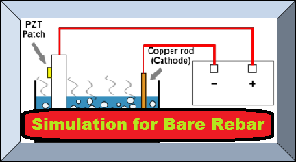
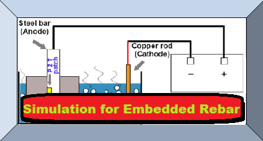

RESOURCES FOR USER |
Corrosion in Reinforced Concrete
For more information user may read the Doctoral Thesis of Dr. Visalakshi Talakokula
"Corrosion Assessment in Rebars of RC Structures Using Equivalent Parameters Extracted from Piezo-Patches.".
EXPERIMENT 7
Corrosion Assessment in Rebars of RC Structures Using PZT Patches
Developed By: |
Dr. Visalakshi Talakokula, |
|||
|   |
| ||
| See related video Corrosion in Reinforced Concrete | |||
For more information user may read the Doctoral Thesis of Dr. Visalakshi Talakokula "Corrosion Assessment in Rebars of RC Structures Using Equivalent Parameters Extracted from Piezo-Patches.". |